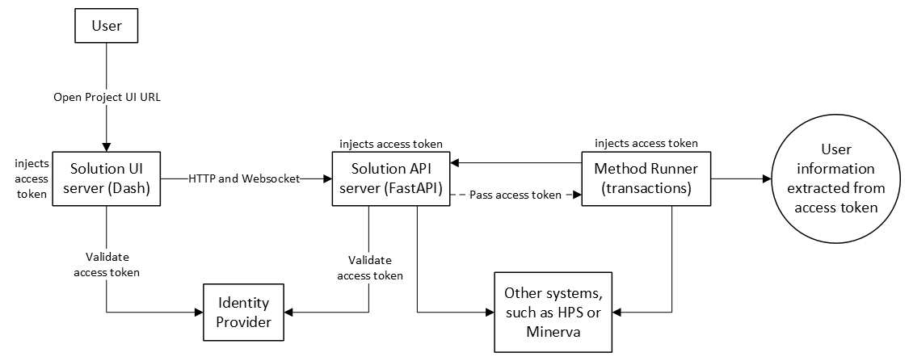

Authentication#
SAF GLOW Engine implements an authentication system that secures access to the API and UI servers and ensures secure interactions with other systems such as HPS and Minerva.
Overview#
GLOW’s authentication system is built around OpenID Connect (OIDC) and OAuth 2.0 standards, ensuring secure access to:
- Solution API server (FastAPI)
HTTP requests: REST and GraphQL
WebSockets
- Solution UI server (Dash)
HTTP requests
- Interactions with HPS
Product instance management
Remote job execution
- Interactions with Minerva
Data repository
The system relies on the presence of bearer access tokens in the incoming requests, either to the Solution UI server or the Solution API server.
The system is configurable and flexible, to the point of being able to disable any validation mechanism. Refer to the Environment variables section for a detailed list of configuration options regarding authentication.
Architecture#

How it works in on-premises deployments#
In this type of container-based deployment, security is paramount, and solution servers are typically deployed alongside a service such as Keycloak for handling user authentication via an identity provider. After a successful login, this service issues access tokens that are injected in the headers of the HTTP requests done to the Solution UI and API servers, like when the user opens a solution project.
From the Solution UI/API server perspective, they are unaware of that authentication process and the origin of the access token. They only see an incoming request and expect it to have a bearer access token in its headers. The access token should be a valid JWT (JSON Web Token) signed by an identity provider, which contains user information and scopes. The Solution UI/API server extracts the access token and validates it against the configured identity provider. If there is no token in the request or the token is invalid, the request is rejected with either a 401 Unauthorized or a 403 Forbidden error, depending on the context. If valid, the request is processed and the access token is passed through to any subsequent component or request made by the server. For example:
In the Solution UI server, the access token is reused for all requests to the Solution API server, including REST, GraphQL and WebSockets.
- In the Solution API server, the access token is:
Reused to authenticate with other systems such as HPS or Minerva
- Passed to the method runner, which in turn can reuse it to:
Authenticate with other systems such as HPS or Minerva
Extract user information and make it available within a transaction
Send requests back to the Solution API server
The on-premises mode requires, at least, the following environment variables to be set:
GLOW_DEPLOYMENT=DockerCompose
GLOW_AUTH_DISABLED=False
GLOW_AUTH_ISSUER_URL=https://your-keycloak-server/auth/realms/your-realm
GLOW_AUTH_CLIENT_ID=your_client_id
# If HPS is required
GLOW_HPS_HOST=host_of_hps_instance
GLOW_HPS_PORT=port_of_hps_instance
GLOW_HPS_CLIENT_ID=rep-jms-web
# If Minerva is required, relying on impersonation feature
ANS_MINERVA_URL=url_to_minerva_instance
ANS_MINERVA_CLI=path_to_minerva_cli_executable
ANS_MINERVA_AUTH__CERTCONFIG=path_to_minerva_cert_config_file
ANS_MINERVA_AUTH__DATABASE=your_minerva_database
How it works in desktop deployments#
It is common that these kinds of deployments are not protected by any user authentication mechanism via an identity provider and thus no access token is expected to be present in the request. Therefore, in desktop deployments, access token validation at the Solution UI/API server is disabled by default. They accept all requests, without or with invalid tokens.
However, the rest of the workflow remains the same. For example, if an access token is present at the initial request, it is still processed at the method runner to extract the user information.
For authenticating with other systems, the method differs depending on the system:
HPS: Interactive authentication flow provided by GLOW.
Minerva: Interactive authentication flow provided by Minerva.
The desktop mode requires, at least, the following environment variables to have the following values:
GLOW_DEPLOYMENT=Desktop
GLOW_AUTH_DISABLED=True
# If HPS is required
GLOW_HPS_HOST=host_of_hps_instance
GLOW_HPS_PORT=port_of_hps_instance
GLOW_HPS_CLIENT_ID=rep-jms-web
# If Minerva is required
ANS_MINERVA_URL=url_to_minerva_instance
ANS_MINERVA_CLI=path_to_minerva_cli_executable
How it works in development#
This is the same as desktop deployments, with the difference that using credentials for the external systems is recommended to avoid interactive flows.
GLOW_DEPLOYMENT=Desktop
GLOW_AUTH_DISABLED=True
# If HPS is required
GLOW_HPS_HOST=host_of_hps_instance
GLOW_HPS_PORT=port_of_hps_instance
GLOW_HPS_USERNAME=your_hps_username
GLOW_HPS_PASSWORD=your_hps_password
# If Minerva is required
ANS_MINERVA_URL=url_to_minerva_instance
ANS_MINERVA_CLI=path_to_minerva_cli_executable
ANS_MINERVA_AUTH__DATABASE=your_minerva_database
ANS_MINERVA_AUTH__USER=your_minerva_user
ANS_MINERVA_AUTH__PASSWORD=your_minerva_password
API key authentication#
SAF GLOW Engine also supports API key authentication for the Solution API server as an alternative mechanism for requests originating from the local machine. When configured, the API key is accepted in the x-api-key header. This mechanism coexists with OIDC: if an API key is not configured or the provided key does not match, the request falls through to standard OIDC validation.
API key authentication is restricted to requests originating from localhost (127.0.0.1, ::1, or localhost). Requests arriving from any other address are not eligible for API key authentication and are always handled by the standard OIDC validation.
The API key simplifies authentication workflows in low-risk local scenarios, avoiding unnecessary token exchanges or token refreshes. For example:
Local GLOW Clients: Clients connecting to the Solution API server from the local machine can authenticate by providing the API key in the
x-api-keyheader.Internal method runner: When the API server launches a transaction method, the method runner needs to make requests back to the API server (for example, to download or upload step fields and to update the method state). If an API key is configured, the method runner uses it for these internal requests instead of passing through the original user’s access token. This ensures that even if the original access token expires during the transaction execution, the method runner can still authenticate with the API server and finish successfully.
Configuration#
The API key can be configured using one of the following environment variables (they are mutually exclusive):
GLOW_API_KEY: The API key value directly.GLOW_API_KEY_FILE: The absolute path to a file containing the API key. The file must exist and the path must be absolute.
# Option 1: Set the API key directly
GLOW_API_KEY=my-secret-api-key
# Option 2: Set the API key via a file
GLOW_API_KEY_FILE=/absolute/path/to/api_key_file
Client usage#
from ansys.saf.glow.client import Client
client = Client(
solution_type=MySolution,
url="http://127.0.0.1:5432",
api_key="my-secret-api-key",
)
Special HPS scenarios#
SAF GLOW Engine supports special authentication workflows for HPS, such as:
Passing HPS configuration at runtime
Triggering HPS interactive authentication workflow on-demand
For detailed information about these scenarios, see HPS authentication.
Hybrid scenarios#
In reality, the possible combinations between access token presence in the request, deployment type (GLOW_DEPLOYMENT), configuration of identity provider (GLOW_AUTH_ISSUER_URL and GLOW_AUTH_CLIENT_ID) and token validation (GLOW_AUTH_DISABLED) allow for many more scenarios. You can expect the following behaviour depending on the configuration of these variables:
Deployment and token validation: Both deployment types (
GLOW_DEPLOYMENT) actually support enabling or disabling token validation (GLOW_AUTH_DISABLED) and therefore can be configured to not enforce the presence of valid access tokens in the requests. However, if the access token is present (even if it’s not validated), some mechanisms are still activated.User information: If an access token is available, user information is extracted from it. This does not require configuring the identity provider (
GLOW_AUTH_ISSUER_URLandGLOW_AUTH_CLIENT_ID), as the information is decoded directly from the JWT token payload.- HPS:
If
GLOW_DEPLOYMENT=DockerCompose, HPS authentication can only be done by either passing the access token extracted from the initial request or using a username and password withGLOW_HPS_USERNAMEandGLOW_HPS_PASSWORD. The access token has precedence.If
GLOW_DEPLOYMENT=Desktop, HPS authentication can be done either via interactive authentication workflow or using a username and password withGLOW_HPS_USERNAMEandGLOW_HPS_PASSWORD. Username and password have precedence.
- Minerva: authentication is independent of the deployment type and only depends on the presence of an access token and username or password.
If an access token is present, it uses the impersonation feature by extracting the username from the token payload. This requires
ANS_MINERVA_AUTH__CERTCONFIGandANS_MINERVA_AUTH__DATABASEto be set and ignores any configured username or password. Note that configuring the identity provider (GLOW_AUTH_ISSUER_URLandGLOW_AUTH_CLIENT_ID) is not required for extracting user information from the token.If no access token is present, it falls back to using username and password, which require
ANS_MINERVA_AUTH__USERandANS_MINERVA_AUTH__PASSWORDto be set. If these environment variables are not configured, it launches the interactive authentication workflow.